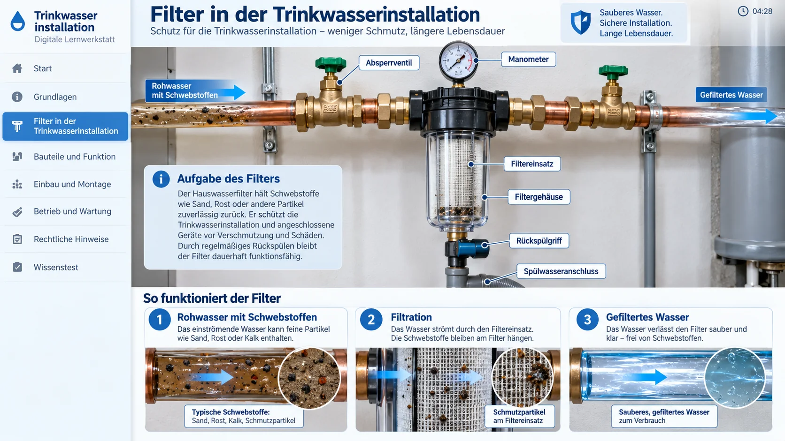

💧→
1 · Rohwasser
Mitgeführte feste Partikel gelangen mit dem Wasser zum Filter.

Das Fachbild ist in der Gestaltung fertig, aber die Bilddatei muss noch in den Beta-Ordner hochgeladen werden.
Wähle ein Bauteil. Seine Funktion erscheint direkt darunter.
Mitgeführte feste Partikel gelangen mit dem Wasser zum Filter.
Das Filtermedium hält geeignete Partikel zurück; nicht jede gelöste Verunreinigung.
Das Wasser verlässt die Filtereinheit mit reduzierter Partikelfracht.
Beim Normalbetrieb werden Partikel zurückgehalten. Bei einem rückspülbaren Filter kann ein bestimmter Spülvorgang Partikel über den dafür vorgesehenen Ablauf austragen.
Das ist eine textgestützte Funktionsgegenüberstellung. Eine technisch geprüfte bewegte Animation folgt als gesonderter Entwicklungsschritt.
Wähle oben bei einem der drei Funktionsschritte „Wissen prüfen“.
Beta-Designversion · ursprüngliche Lernwerkstatt unverändert · Fortschritt ausschließlich auf diesem Gerät